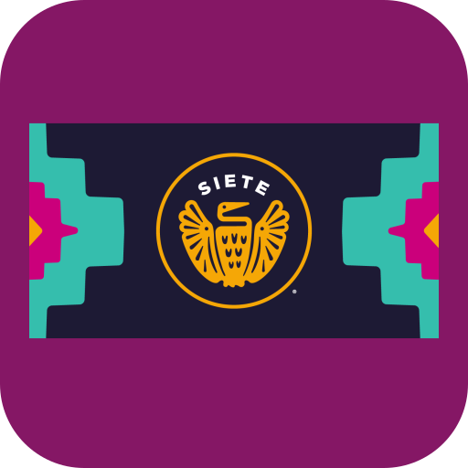

You’re offline
Reconnect to the internet to load the latest Siete documents. Pages you opened previously may still be available from your browser history.

Reconnect to the internet to load the latest Siete documents. Pages you opened previously may still be available from your browser history.